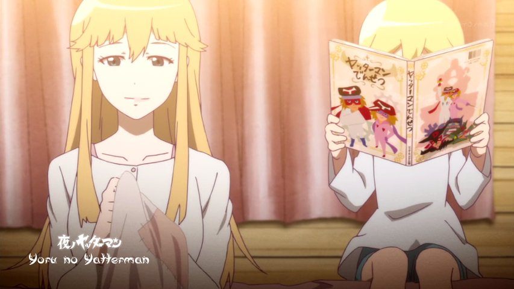

Yoru no Yatterman 01 vostfr

Bonsoir à tous!
Voici le premier épisode de Yoru no Yatterman (Yatterman de la Nuit).
Cette série a hérité d'éléments d'histoire d'un animé des années 70, mais peut se regarder indépendamment car les évènements se déroulent bien après l'histoire originale, que je ne connais pas d'ailleurs.
Sans m'étendre davantage en spoilers (vous pouvez lire le résumé sur la fiche de toute façon ;) ), je vous laisse apprécier l'épisode!
A bientôt!